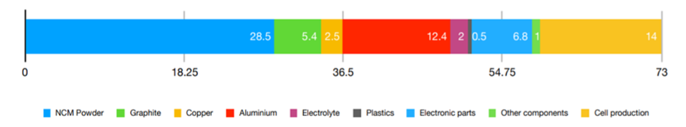

For fully electric planes to be possible there must be new advances in battery technology to make them more energy dense,
as well as making the production of batteries more sustainable for the environment. Airports would also need significant
upgrades to their electric infrastructure to accommodate higher energy requirements. Electric planes would significantly
reduce direct greenhouse gas emissions due to the removal of combustible fuels in their engines, as well as a reduction
in noise pollution on take-off and landing in the areas around airports.
Introduction
With an increased focus on sustainable transport methods, aircraft will need to become less reliant on fossil fuel as
their source of power.The most obvious solution is for electricity to be the main power source of aircraft in future designs.
However, this is not an easy solution as it will require major advances in battery technology and complete rebuilding of
airport infrastructure to support any electric aircraft (Air Charter Service, 2023).
Analysis and Discussion
There are significant challenges in designing electric aircraft. Firstly, there is the issue of the batteries required
to power the aircraft. Lithium-ion batteries have significantly lower energy density than conventional jet fuel
(Air Charter Service, 2023), (450 watt hours per kilogram compared to 12000 watt hours per kilogram, (amprius, 2023), and
even with poor engine efficiency of 50% jet fuel still has 6000 watt hours per kilogram (Epstein and O’Flarity, 2019)
meaning that a large number of batteries will be needed to be used in order to make up for this. Because of the large number of heavy batteries required, as muchas 60% of the total weight of
the vehicle could be made up of batteries, compared to the much lower 30% of the weight being fuel in current plane
designs (Air Charter Service, 2023)), so electric aircraft will only be able to fly for short amounts of time.
However, with 50% of all global flight being less than 500 miles it
wouldn’t be problematic to begin with (Air Charter Service, 2023). For this reason, any plans for electric
aircraft would be best suited to private or short-haul planes at first, until the battery technology required for
commercial flights is possible.
As well as this, there needs to be suitable infrastructure to support electric planes, such as a way to recharge the
batteries quickly, especially if electric planes are to replace current commercial aircraft, which can refuel in less
than an hour and fly for up to twenty-one (depending on a variety of different factors) (Air Charter Service, 2023).Also,
the current electrical infrastructure on airports is unlikely to be sufficient for the needs of electric planes
(Air Charter Service, 2023) due to the high-power charging stations that will need to be
designed and built to recharge the aircraft’s batteries quickly and efficiently so that the aircraft are able to stick
to the current tight schedules of airports. Because of this, the electrical grids on airports will have to be extended
to areas that did not previously need access to large amounts of power, such as hangers or the ramp, in order to supply
new charging stations with the power they need (Jesse, 2023).
Once these challenges are overcome, electric planes offer multiple benefits, such as significantly lower greenhouse
gas emissions from the aircraft themselves. Electric aircraft would eliminate direct air pollution (Schäfer, et al, 2018)
as they would not have any combustion of fossil fuels in their engines. However, during the manufacturing process of
creating lithium-ion batteries, vast amounts of CO2 is produced. For each kilowatt hour (kWh) of range in the produced
battery, 73kg of CO2 has been produced (see Figure 1).
Figure 1: CO2 Produced from the Production of Lithium-Ion Batteries

40% of the CO2 comes from mining the materials needed for the batteries (Nickel, Manganese, Cobalt and lithium are
mined and then processed into cathode powder), which accounts for 28.5 kg of CO2 /kWh of the 73kg. The next most
polluting step of this process is making the battery cell itself, then comes producing the aluminium for the casing
of the cell (‘What is the environmental impact of lithium batteries?’). For a small 2-seat
aircraft, a 21kWh battery is used, so in its production 1533kg of CO2 has been produced, but aircraft of equal size
to current private jets would need significantly more. One company, Heart Aerospace, is designing a 19-seat electric
plane which will have four 180kWh batteries, each one requiring 13140kg of Co2 to be produced, which would total at
52560kg for a set of batteries to power just one aircraft(‘What is the environmental impact of lithium batteries?’)
(‘Electric Aircraft – Battery, Hybrid and Fuel Cell’). One reason for the high CO2 emissions is
that they are often made in countries which make their energy with non-renewable sources (e.g., China, which produces
60% of its electricity from coal). This means that if the countries which made these batteries switched to cleaner
energy sources, or if production is moved to countries that already have higher percentages of clean energy sources,
the carbon footprint of lithium-ion batteries would decrease (‘What is the environmental impact of lithium batteries?’).
Noise pollution of aircraft on take-off is expected to be reduced due to higher mass flow and lower exhaust speed of
electric motors compared to conventional turbofan engines (Civil Aviation Authority, 2019). However,
noise on approach could be louder due to expected designs being much heavier on landing than current aircraft,
resulting in higher thrust requirements and therefore more noise from the engines (Civil Aviation Authority, 2019).
Even though there will be more noise when landing it will be minimal, with only a 15% largernoise contour area compared
to current aircraft (Schäfer, et al, 2018), and the noise contour area on take-off will be reduced
by more than 50% (Schäfer, et al, 2018).
Conclusion
In conclusion, electric aircraft are not possible on a commercial basis just yet, but there are possibilities in the
private or short-haul sector of air travel due to any current designs having ideal ranges for quick trips across a
country. However, the startup cost of electric aircraft will be high due to a large number of energy dense batteries
needing to be produced, which is costly for the manufacturer and the environment, but with a shift to greener and
cheaper energy sources this could be mitigated slightly. Electric planes would also be beneficial to those that live
around airports, especially private airfields which see large numbers of private aircraft arrive and depart from, as
they will produce less noise over a smaller area overall.